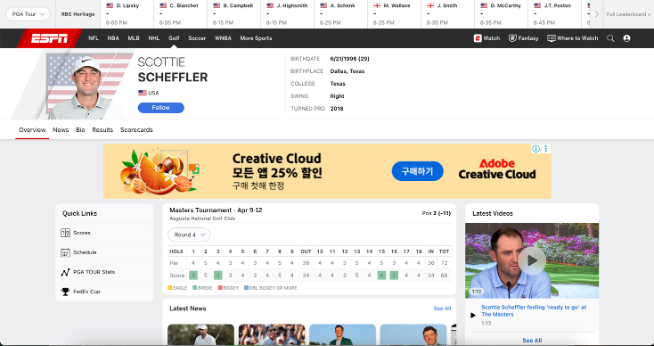

여러분에게 하나의 웹사이트 URL이 주어집니다.
주어진 웹사이트에서 여러분들의 경험을 바탕으로 직접 탐색하며, 실제 사용자가 수행할 만한 작업(Task)을 작성합니다.
작성한 Task는 AI 에이전트가 실제 웹 환경에서 사용자의 요청을 수행할 수 있도록 학습시키는 데 사용될 예정입니다.
따라서 AI가 추가 정보 없이 명확하게 이해하고 수행할 수 있는 구체적인 작업을 생성해야 합니다.
작업(Task) 이란?
"어떤 웹사이트에서 달성하고 싶은 하나의 구체적인 목표"를 자연스럽게 서술한 것입니다.
예: "Book the cheapest hotel in Paris for 2 adults from October 20 to 23, 2026 on booking.com."
주의사항
・개인정보(실제 이름, 전화번호, 주소 등)는 절대 입력하지 마세요.
・윤리에 위배되는 Task는 절대 작성하지 마세요(도박, 성인, 저작권 위배 등).
・날짜가 있는 Task는 현재로부터 최소 5개월 이후로 입력해주세요.
・하나의 URL당 최대 3개의 Task를 작성할 수 있습니다.
고품질 Task 작성 가이드
고품질 Task란?
사용자가 실제 컴퓨터 환경에서 수행하는 구체적인 목표와 명확한 성공 기준을 포함한 Task를 의미합니다. 타인이 이 Task를 읽었을 때 추가 정보 없이도 무엇을 해야 하는지 정확히 이해할 수 있고, 완료 여부를 객관적으로 판단할 수 있어야 합니다.
4가지 기준
1실용성
실제 사용자가 해당 웹사이트에서 수행하는, 인위적이지 않고 사용자에게 유용한 작업이어야 합니다.
"이 작업을 실제로 내가 해본 적이 있는가?"를 기준으로 판단하세요.
웹사이트의 본래 목적에 부합하는 작업이어야 합니다. (예: 쇼핑 사이트 → 상품 검색·구매·비교)
인위적인 Task(목적이 불분명한 Task)는 작성하지 않아야 합니다.
"Book the cheapest round-trip economy flight from Los Angeles to New York for 1 adult, departing September 20, 2026 and returning September 23, 2026." → 사이트, 목적지, 날짜, 인원, 좌석 등급까지 명시된 실제 항공권 예약 작업
"Subscribe to the channel that uploaded the most-viewed 'MacBook Neo review' video on YouTube." → YouTube에서 리뷰 영상을 찾고 채널을 구독하는 실제 사용자 행동
"Click 10 buttons in order on YouTube." → 아무도 실제로 하지 않을 인위적인 작업
"Find out who wrote the latest article on allrecipes." → 기사 작성자 확인은 레시피 사이트의 본래 목적과 무관한 작업
2구체성
추가 정보 없이도 바로 수행할 수 있을 만큼 구체적인 조건이 명시되어야 합니다.
제품명, 날짜/기간, 수량, 인원, 위치 등 필수적인 조건을 포함하여 구체성을 높이세요.
"On apple.com, compare the price and storage options of the iPhone 17 Pro." → 사이트, 제품명, 비교 항목이 모두 명시되어 바로 수행 가능
"Book the highest-rated hotel under $200 per night in Paris for 2 adults from June 10 to 14, 2026 on booking.com." → 사이트, 가격 조건, 평점, 도시, 인원, 날짜가 모두 명시됨
"Book the flight that under the price of $250 within 3 flight hours for oneway between September 23th-25th." → 출발지와 인원이 명시되어 있지 않는 등, 수행에 필요한 조건이 누락됨
"Find a navy short-sleeved striped shirt under $15 at Uniqlo that can be worn oversized." → 옷 사이즈가 명시되어 있지 않아, 수행에 필요한 핵심 정보가 부족함
3객관성
Task의 완료/성공 여부를 누가 판단하더라도 동일한 결론을 내릴 수 있어야 합니다.
산출물이 명확하지 않으면 판단 기준이 사람마다 달라질 수 있습니다.
"좋은", "인기 있는", "최고의" 같은 주관적 표현 대신 가격, 평점, 순위 등 객관적 기준을 사용하세요.
사이트 밖으로 이동이 필요한 Task는 적절하지 않습니다.
"Compare the prices and customer ratings of the Rhino USA Folding Survival Shovel and the iunio 17-inch Folding Survival Shovel on amazon.com." → 가격과 평점이라는 객관적 수치로 비교하므로 결과를 누구나 동일하게 판단 가능
"Purchase the cheapest new Sony WH-1000XM5 headphone available on eBay." → "cheapest"라는 객관적 가격 기준으로 제품을 특정할 수 있음
"Prepare for me to play Pottery Master on CrazyGames." → "Prepare for me"의 완료 여부 판단이 주관적임
"Start a role-playing game that has a 'Very Positive' or higher english review rating, is free to play, and supports Korean." → Task를 수행하기 위해서 외부 프로그램이 필요함
4고수준 목표 지향성
하나의 최종 목표만을 작성하고, 수행 과정은 작성하지 마세요.
단일 목표를 지향해야 합니다.
클릭·스크롤·입력 순서 등 절차적 지시는 지양합니다.
최종 목표를 향한 단계별 지시는 작성하지 않습니다.(예: Find ~ and print ~, Search ~ and provide ~)
"Book a vacation rental in Nice, France for 2 guests, checking in March 20, 2026 and checking out March 23, 2026 on airbnb.com." → 예약이라는 최종 목표만 서술하고, 수행 절차는 포함하지 않음
"Create a playlist called 'Keyboard Reviews' on YouTube with the top 3 results for 'best budget mechanical keyboard 2026'." → 플레이리스트 생성이라는 최종 목표와 조건만 서술
"Find a Blueberry Custard Pie recipe with a rating of 4 or higher on Allrecipes and print it." → 검색, 프린트하라는 단계적 지시가 나열되어 있음
"Type 'Lady Gaga' into the search box, scroll through the results, and find her latest album on YouTube." → 검색, 스크롤 등 절차를 나열하고 있으며 최종 목표가 불명확함
"Find the Real Madrid's most recent completed match and list the names of all Real Madrid players who scored in sports.yahoo.com." → 두 개의 목표(경기 찾기와 이름 나열)가 나열되어 있음
이런 Task는 만들지 마세요
· 개인정보(실제 이름, 전화번호, 주소 등) 입력이나 로그인을 요구하는 Task를 만들지 않는다.
· 웹사이트와 무관하거나 해당 페이지에 존재하지 않는 허구의 콘텐츠를 기반으로 작성하지 않는다.
· 제품명만을 변경하는 등 의미적 차이가 없는 단순 변형으로 Task를 대량 생성하는 것은 지양한다.
사용했던 경험이 있다면 경험에 기반하여, 이 사이트에서 무엇을 할 것인지 목표를 작성합니다.
목표 예시: "경기 순위 확인"
4
해당 목표 직접 수행 후, 최종 URL 첨부
실제로 웹사이트에서 해당 목표를 수행합니다. 마지막 도달한 페이지를 첨부하세요.
5
마지막 페이지를 보고 구체적인 Task 작성
수행한 결과를 바탕으로, 구체적인 조건을 포함한 영어 Task를 작성합니다.

"Find Scottie Scheffler's score and leaderboard position at this year's Masters Tournament."
핵심 포인트
· 목표은 간단히, Task는 구체적으로 작성합니다.
· 직접 수행한 뒤 마지막 페이지를 보고 Task를 작성하면 자연스럽게 구체적인 조건이 포함됩니다.
· 최종 URL은 검수자가 task의 유효성을 확인하는 데 사용되므로, task에 명시된 모든 조건이 해당 URL에서 확인 가능해야 합니다.